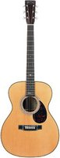

2021-

Martin OM-28 John Mayer
This guitar was luckily found and purchased through a friend (also a big fan of John Mayer) working in a guitar shop in Taipei, Taiwan. The guitar is the first official John Mayer Signature model made by Martin and was produced as a limited run of only 404, and I own the #173. The guitar features a solid Engelmann spruce top and solid East Indian rosewood back and sides.